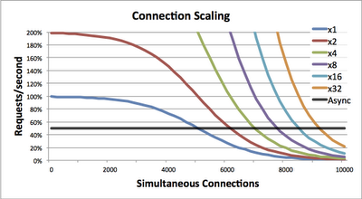

Node.js
Introduction
Conquest of the office: Step 1
Definition:
- Node.js is a high performance network applications framework, well optimized for high concurrent environments...
- Personified in a command line tool.
- Or mode simply: Node.js is Javascript on the server
Pobol y Node
- Node.js was created by Ryan Dahl in 2009
- It is mainly sponsored by a company called Joyent
- First official release in 2011
- Node.js is NOT the first attempt of a server side Javascript
- Same year, the package manager NPM is introduced
- In june of 2011, Microsoft wants to help porting Node to windows
- Is is finally completed in 2012
- 2012, Ryan Dahl quit Node.js community (and any online presence)
- The creator of NPM, Isaac Schlueter become the new maintainer. Like Ryan, he is employed by Joyent
- During the early years, the Javascript community wake up and the number of Node.js based projects explode
- 2014, Schlueter stepped aside in favour of Timothy J Fontaine and create the Npm Inc. company
- Two days ago, a Drama happened as Nodejitsu tried to register the NPM trademark
Behind the scene
- Node.js runs on V8
- V8 is the JS engine developed by Google for Chrome
- It uses an event-driven, non-blocking I/O model
- It makes use of event-loops via callbacks
- There is no DOM
- Node.js is single threaded by default
- 40% JS, 60% C++, Node.js use libuv to run long running jobs
The butterfly effect
IO is time consuming
Waiting is free

When to use Node
- Http servers (APIs)
- Web chat applications
- Any kind of real time / collaboration tools
- Data streaming (Like Twitter API)
- High concurrency
- You like Javascript
- Want to share code between front and server
When not to use Node
- Heavy CPU intensive calculation
- You don't like Javascript
- Simple CRUD applications
- You are not willing to pay the price of a changing world
- Note: Debugging is not really straightforward
A dynamic Ecosystem
"There is a module for it"
- NPM use module pattern
- It is easy to use
- There days, there is a library for almost everything
- npm: dependency management
- grunt: build tool
- express: MVC framework
- socket.io: Websockets
- mocha: Unit testing
- Non-blocking DB libraries (All sorts)
- Utilities, you name it...
Example: Read a file
var fs = require('fs');
fs.readFile('/etc/passwd', function (err, data) {
if (err) throw err;
console.log(data);
});
Example: Web server
var http = require('http');
var server = http.createServer(function(req, res) {
res.writeHead(200, {
'Content-Type': 'text/plain'
});
res.end('Hello HTTP!');
});
server.listen(5000);
Example: Module
name.js:
var capaldi = 13;
var doctor = function() {
return capaldi;
};
module.exports = doctorwho;
server.js
var who = require('./name');
console.log(who()); // Prints: 13